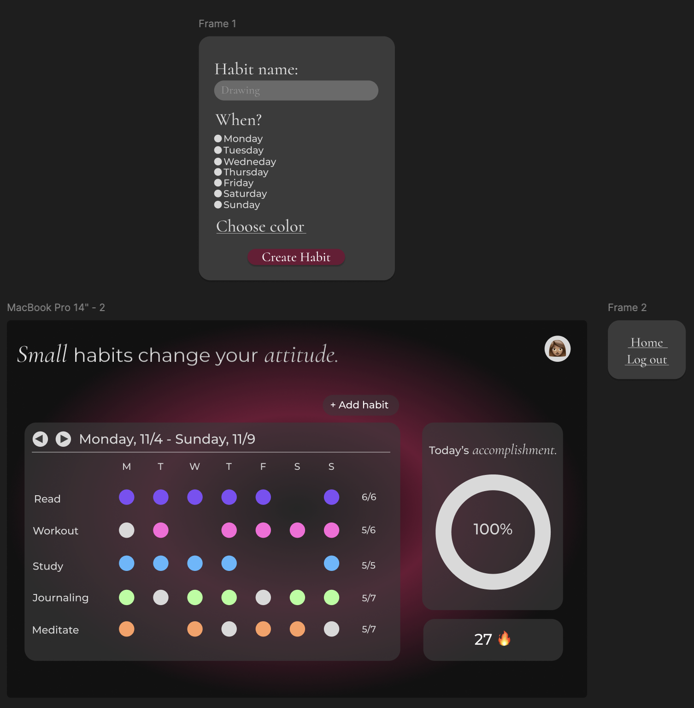
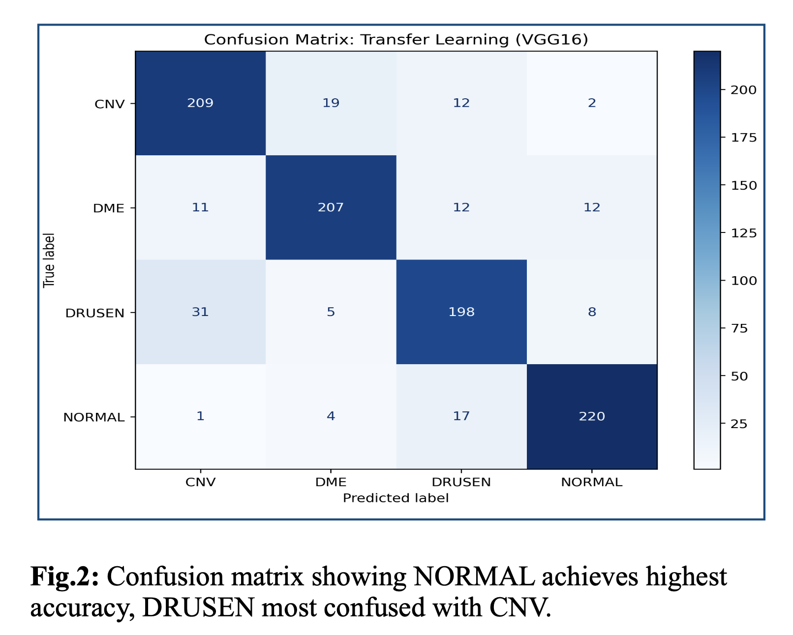

Kalyani Panambalom
Full-Stack Developer | AI & UX Enthusiast
Experience
System Architect Intern
Persona Design LimitedDeveloped features for an AI-powered marketing platform using Angular (Frontend) and FastAPI/Python (Backend), working across the full technology stack.
- Full-Stack AI Integration: Built user-facing features including file download with permission-based access controls, chat thread management, and persona segmentation workflows.
- Database Architecture: Designed and migrated JSONB schemas for a dynamic persona-type system, enabling schema-driven AI content generation via Azure OpenAI.
- Security & Scalability: Implemented Role-Based Access Control (RBAC) and secure RESTful APIs with complex cascade operations.
- UI/UX Implementation: Created intuitive user workflows including confirmation dialogs, real-time UI updates, and conditional rendering based on permissions.
"Kalyani consistently demonstrated strong technical capabilities, a proactive learning approach, and a genuinely positive attitude. Her ability to trace issues across the full stack showed a mature understanding of system architecture. I recommend her without reservation."
Projects
-

Habitude.
A habit-tracking app built with a design-first approach. Created high-fidelity Figma mockups before coding, then implemented a three-tier architecture (React, Node.js, PostgreSQL) with full DevOps pipeline: Docker containerisation, GitHub Actions CI/CD, and Azure cloud deployment.
-

Biomedical AI & Data Analytics
Medical imaging classification achieving 86.2% accuracy using Transfer Learning (VGG16) on retinal OCT scans. Integrated Explainable AI (SHAP) to visualise which retinal regions influence predictions, making the model's decisions transparent for clinical use.
-

Raj Chat AI Assistant
Raj Chat lets you ask marketing and brand-strategy questions through a sleek Angular interface, sending your input to a FastAPI backend that forwards your query to OpenAI's GPT-3.5-turbo model. It also offers handy presets, a custom input field, secure API-key integration, and persistent chat history in SQLite via SQLModel.